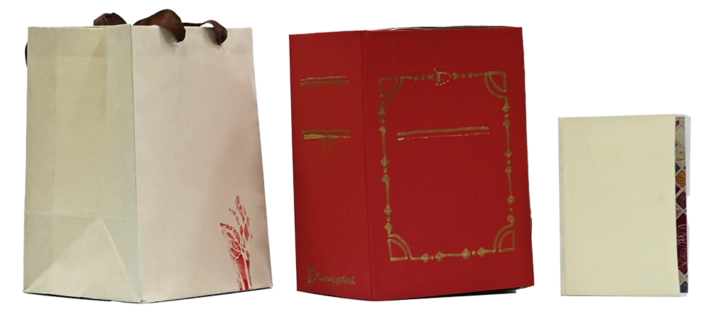
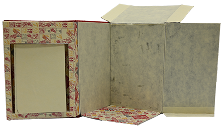
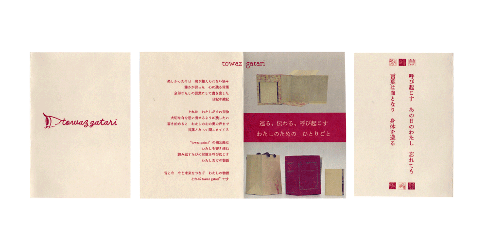
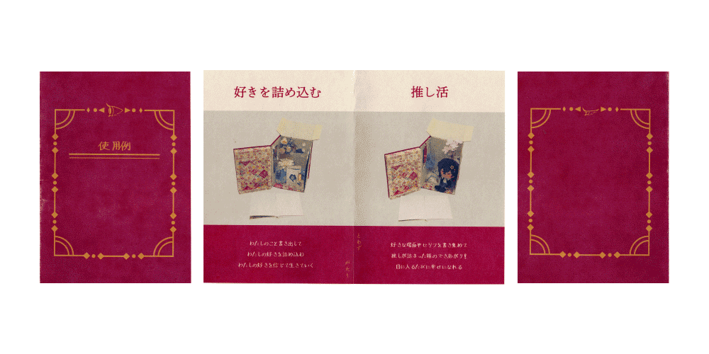
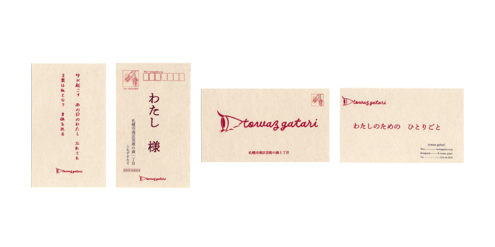
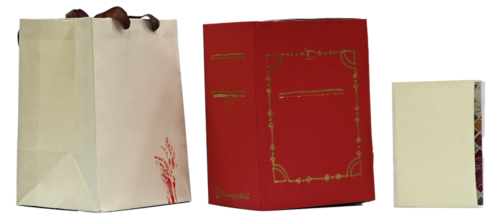
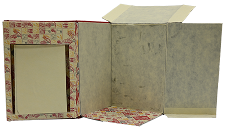
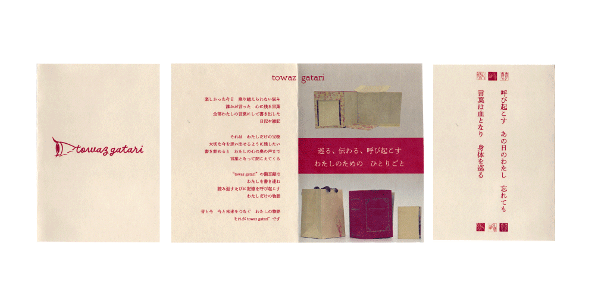
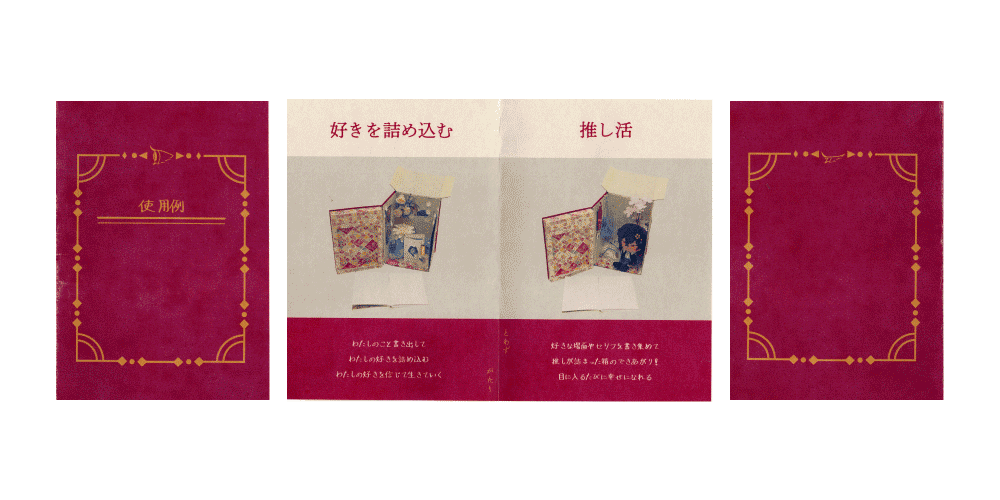
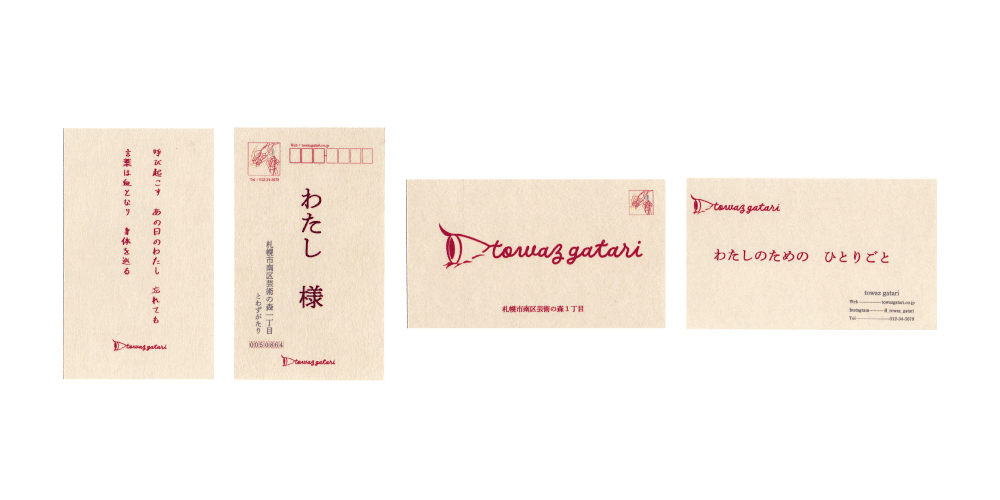

情報リテラシーⅡ
ロゴ
包装と商品
 リーフレットと名刺
  ロゴ
包装と商品
 リーフレットと名刺
  
私たちは環境（他者／社会／自然）との関わりあいの中で絶えず情感を生起させている。デザインにおける「情報」をこれら環境（他者／社会／自然）と情感的な信頼に基づいて関わりあえるようになるための〈知恵〉や〈わざ〉としよう。そうした場合、「情報」のリテラシーとは自らの経験に含まれる〈知恵〉や〈わざ〉を省察的に再解釈し、その意味を言葉やカタチを用いて表現する能力といえる。私たちデザイナーは自らの情報リテラシーを涵養することによって、人と社会の変化が読み取れるようになり、人びとの心を動かす「情報」としてのモノ・コトがデザインできるようになる。
本講義では「芸術の森周辺」あるいは「個々人の散歩エリア」をフィールドにして、私たち個々人が何とどのような関わり合いがあるのかを再解釈して視覚的に表現する活動をおこなう。表現の道具には、経験を再解釈するための道具としての〈短歌〉や〈スケッチ、判子〉などの描画用筆記具をつかい、伝えるための道具としてAdobe Illustrator, Photoshopをつかう。一連の講義を通じて、自らが「見て・感じ得ていること」をビジュアルコミュニケーションするための〈知恵〉と〈わざ〉を体得する。
①〈表現の思考道具〉としての「手」を使えるようになる
・手を使ってアイデアを見えるかたちにする表現技術を体得する。
②〈表現の加工道具〉としての「グラフィックソフト」を使えるようになる
・Adobeソフトを用いて、アイデアをグラフィカルに仕上げ加工するための技術を身につける。
③構成的なグラフィック表現ができるようになる
・〈形・色・文字〉を使って物事の特徴をグラフィカルに再構成する表現技術を体得する。
④ブランディングの視座を宿す
・表現する対象の価値を統合的にビジュアライズする視座を獲得する。
⑤グラフィックデザインの実践プロセスを学ぶ
・グラフィックデザイン現場において、仕事のデザインプロセスを組み立て、デザインの仕上げとコンセプトの説明責任を果たすことに役立てられるようになる。
今までの作品の中で最も良いものを作れたと思っています。散歩をする中で詠んだ短歌を持ち寄ってグループで歌会をしたときに仲間の印象に残った短歌からこのブランドが始まりました。歌会では、私が人より体の感覚や血が巡っていることについて興味を持っていて、それは私の強みになりうるのだと分かりました。そこから血管と葉脈のパターングラフィックやはんこを作ってみると、今までにもありそうだけどオリジナリティーのある作品が出来上がりました。ブランドを考えるときは、趣味の読書や日記などの文字を書くことについて取り上げて、そこからパッケージを作る時も日常生活で身近な推し活を思い出して作れました。オリジナリティーがある作品になったと思います。改善点は、パッケージの素材を軽量化すること、白以外の紙に想定通りの色をのせる方法を学ぶこと、写真の撮り方、文字のデザインを自分で作ることなどがあげられます。今後もこの作品で作った設計図などを利用して、個人制作に役立てたいと思っています。